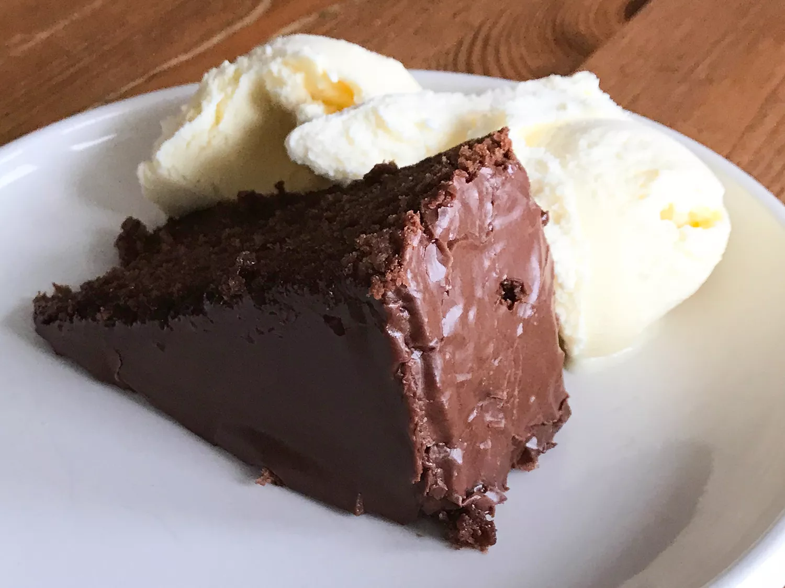

Chocolate Cake Recipe

Description
I found this recipe on allrecipes.com in the deserts category.
It's posted by the user MARIASUE. Here's their description.
"My mom created this recipe years ago and my sisters and brother and I have entered this in 4-H and won many awards. Yummy on its own or with chocolate frosting!"
Ingredients
- 1 cup margarine
- 1 ¾ cups white sugar
- 3 eggs
- 1 ½ teaspoons vanilla extract
- 1 ½ cups milk
- 2 ½ cups all-purpose flour
- 6 tablespoons unsweetened cocoa powder
- 1 ½ teaspoons baking soda
- 1 teaspoon salt
Steps
- Preheat oven to 350 degrees F (175 degrees C). Grease and flour a 9x13 inch pan. Sift together the flour, cocoa, baking soda and salt. Set aside.
- In a large bowl, cream together the margarine and sugar until light and fluffy. Beat in the eggs one at a time, then stir in the vanilla. Beat in the flour mixture alternately
with the milk, mixing just until incorporated. Pour batter into prepared pan.
- Bake in the preheated oven for 40 to 45 minutes, or until a toothpick inserted into the center of the cake comes out clean. Allow to cool.
- Enjoy!